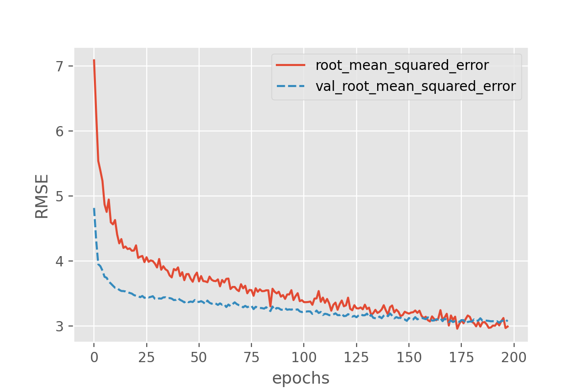
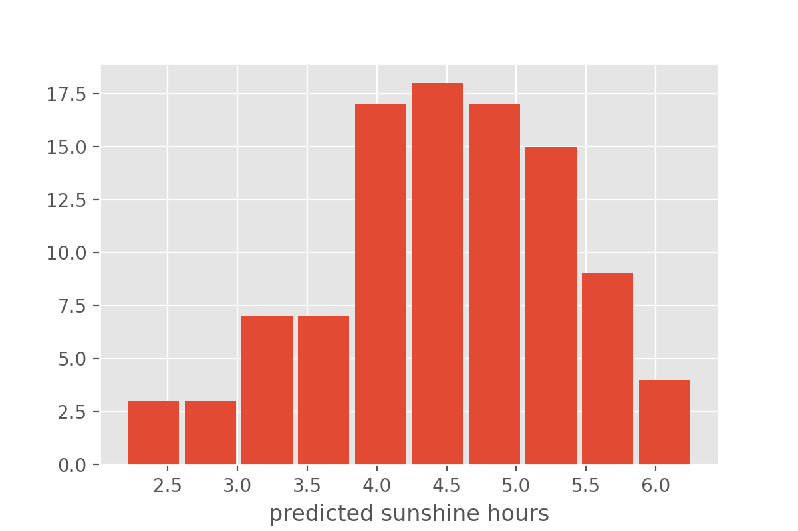
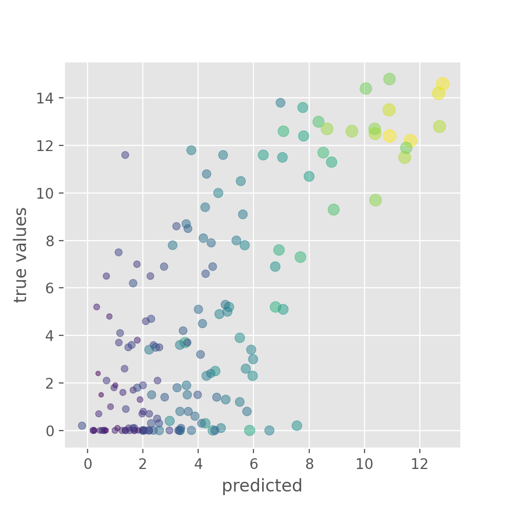

Bonus material
Last updated on 2026-03-10 | Edit this page
ML Pipeline Visualisation
To apply Deep Learning to a problem there are several steps we need to go through:
Feel free to use this figure as png. The figure is contained in
fig/graphviz/ of this repository. Use the
Makefile there in order to reproduce it in different output
formats.
{kind=link}
Optional part - prediction uncertainty using Monte-Carlo Dropout
Depending on the data and the question asked model predictions can be highly accurate or, as in the present case, show a high degree of error. In both cases it often is highly relevant to get both model predictions an an estimate of how reliable those predictions are. Over the last years this has been a very dynamic, rapidly growing area and there are many different ways to do uncertainty evaluation in deep learning. Here we want to present a very versatile and easy-to-implement method: Monte-Carlo Dropout (original reference: https://arxiv.org/abs/1506.02142).
The name of the technique refers to a very common regularization technique: Dropout. So let’s first introduce this:
Dropout: make it harder to memorize things
One of the most versatile regularization technique is dropout. Dropout essentially means that during each training cycle a random fraction of the dense layer nodes are turned off. This is described with the dropout rate between 0 and 1 which determines the fraction of nodes to silence at a time.

The intuition behind dropout is that it enforces redundancies in the network by constantly removing different elements of a network. The model can no longer rely on individual nodes and instead must create multiple “paths”. In addition, the model has to make predictions with much fewer nodes and weights (connections between the nodes). As a result, it becomes much harder for a network to memorize particular features. At first this might appear a quiet drastic approach which affects the network architecture strongly. In practice, however, dropout is computationally a very elegant solution which does not affet training speed. And it frequently works very well.
Important to note: Dropout layers will only randomly silence nodes during training! During a predictions step, all nodes remain active (dropout is off).
Let’s add dropout to our neural network which we will do by using
keras Dropout layer (documentation & reference: https://keras.io/api/layers/regularization_layers/dropout/).
One additional change that we will make here is to lower the learning
rate because in the last training example the losses seemed to fluctuate
a lot.
PYTHON
def create_nn(n_features, n_predictions):
# Input layer
layers_input = keras.layers.Input(shape=(n_features,), name='input')
# Dense layers
layers_dense = keras.layers.Dense(100, 'relu')(layers_input)
layers_dense = keras.layers.Dropout(rate=0.2)(layers_dense)
layers_dense = keras.layers.Dense(50, 'relu')(layers_dense)
layers_dense = keras.layers.Dropout(rate=0.2)(layers_dense)
# Output layer
layers_output = keras.layers.Dense(n_predictions)(layers_dense)
# Defining the model and compiling it
return keras.Model(inputs=layers_input, outputs=layers_output, name="model_dropout")
model = create_nn(X_data.shape[1], 1)
model.compile(loss='mse', optimizer=keras.optimizers.Adam(1e-4), metrics=[keras.metrics.RootMeanSquaredError()])
model.summary()OUTPUT
Model: "model_dropout"
_________________________________________________________________
Layer (type) Output Shape Param #
=================================================================
input (InputLayer) [(None, 163)] 0
_________________________________________________________________
dense_12 (Dense) (None, 100) 16400
_________________________________________________________________
dropout (Dropout) (None, 100) 0
_________________________________________________________________
dense_13 (Dense) (None, 50) 5050
_________________________________________________________________
dropout_1 (Dropout) (None, 50) 0
_________________________________________________________________
dense_14 (Dense) (None, 1) 51
=================================================================
Total params: 21,501
Trainable params: 21,501
Non-trainable params: 0
_________________________________________________________________Compared to the models above, this required little changes. We add
two Dropout layers, one after each dense layer and specify
the dropout rate. Here we use rate=0.2 which means that at
any training step 20% of all nodes will be turned off. You can also see
that Dropout layers do not add additional parameters. Now, let’s train
our new model and plot the losses:
PYTHON
history = model.fit(X_train, y_train,
batch_size = 32,
epochs = 1000,
validation_data=(X_val, y_val),
callbacks=[earlystopper],
verbose = 2)
history_df = pd.DataFrame.from_dict(history.history)
sns.lineplot(data=history_df[['root_mean_squared_error', 'val_root_mean_squared_error']])
plt.xlabel("epochs")
plt.ylabel("RMSE")
In this setting overfitting seems to be prevented, however the overall results have not improved significantly. Above we have used dropout to randomly turn off network nodes during training. When doing predictions, dropout is automatically deactivated and all nodes stay active. Each time you run the same input data through the same trained model the prediction will be exactly the same.
Monte-Carlo Dropout relies on a simply change: dropout will remain active during prediction! This means that each time a prediction step is done, the model will look different because a fraction of all nodes will be turned off randomly. One can interpret all of those random variations as individual models. Monte-Carlo Dropout now makes use of this fact and collects many different predictions instead of only one. At the end this collection of predictions can be combined to a mean (or a median) prediction. The variation of all the predictions can tell us something about the model’s uncertainty.
A simple (and a bit hacky) way to enforce dropout layers to remain
active is to add training=True to the model:
PYTHON
def create_nn(n_features, n_predictions):
# Input layer
layers_input = keras.layers.Input(shape=(n_features,), name='input')
# Dense layers
layers_dense = keras.layers.BatchNormalization()(layers_input)
layers_dense = keras.layers.Dense(100, 'relu')(layers_dense)
layers_dense = keras.layers.Dropout(rate=0.2)(layers_dense, training=True)
layers_dense = keras.layers.Dense(50, 'relu')(layers_dense)
layers_dense = keras.layers.Dropout(rate=0.2)(layers_dense, training=True)
# Output layer
layers_output = keras.layers.Dense(n_predictions)(layers_dense)
# Defining the model and compiling it
return keras.Model(inputs=layers_input, outputs=layers_output, name="model_monte_carlo_dropout")
model = create_nn(X_data.shape[1], 1)
model.compile(loss='mse', optimizer=Adam(1e-4), metrics=[keras.metrics.RootMeanSquaredError()])Model training remains entirely unchanged:
PYTHON
history = model.fit(X_train, y_train,
batch_size = 32,
epochs = 1000,
validation_data=(X_val, y_val),
callbacks=[earlystopper],
verbose = 2)But when now doing predictions, things will look different. Let us do two predictions and compare the results.
PYTHON
y_test_predicted1 = model.predict(X_test)
y_test_predicted2 = model.predict(X_test)
y_test_predicted1[:10], y_test_predicted2[:10]This should give two arrays with different float numbers.
We can now compute predictions for a larger ensemble, say 100 random variations of the same model:
from tqdm.notebook import tqdm # optional: to add progress bar
n_ensemble = 100
y_test_predicted_ensemble = np.zeros((X_test.shape[0], n_ensemble))
for i in tqdm(range(n_ensemble)): # or: for i in range(n_ensemble):
y_test_predicted_ensemble[:, i] = model.predict(X_test)[:,0]This will give an array of predictions, 100 different predictions for
each datapoint in X_test. We can inspect an example
distribution, for instance by plotting a histrogram:

Instead of full distributions for every datapoint we might also just want to extract the mean and standard deviation.
y_test_predicted_mean = np.mean(y_test_predicted_ensemble, axis=1)
y_test_predicted_std = np.std(y_test_predicted_ensemble, axis=1)This can then be plotted again as a scatter plot, but now with added information on the model uncertainty.
PYTHON
plt.figure(figsize=(5, 5), dpi=100)
plt.scatter(y_test_predicted_mean, y_test, s=40*y_test_predicted_std,
c=y_test_predicted_std, alpha=0.5)
plt.xlabel("predicted")
plt.ylabel("true values")